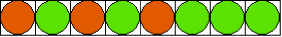

Zadania trzeciego etapu Konkursu Informatycznego dla gimnazjalistów LOGIA 13
Zadanie 1 (Przekładanie kulek).
Olek i Ala bawią się czerwonymi i zielonymi kulkami oraz zestawem pudełek ułożonych w rzędzie. Ala wkłada kulki do pudełek, po jednej do każdego. Następnie Olek przekłada kulki, wyjmując dowolne dwie z nich i zamieniając je miejscami. Zabawa kończy się, gdy uzyskany zostanie dwubarwny naprzemienny układ: |  |
w pierwszym pudełku kulka czerwona, w drugim zielona, w trzecim czerwona, w czwartym zielona itd. Jeśli zabraknie kulek jednego koloru, to na końcu rzędu pozostaje ciąg kulek w drugim kolorze. Olek stara się uporządkować kulki w możliwie najmniejszej liczbie kroków, aby Ala nie zaczęła się nudzić.
Pomóż Olkowi i napisz funkcję KULKI :s obliczającą, ile co najmniej zamian musi wykonać. Parametr :s jest niepustym słowem złożonym z liter c oraz z, o maksymalnej długości 100, opisującym początkowy układ kulek.
Przykłady:
| Wynikiem | KULKI "czczczzz | jest 0 (kulek nie trzeba przekładać). |
| Wynikiem | KULKI "czczzczz | jest 1 (wystarczy zamienić miejscami kulki z piątego i szóstego pudełka, aby otrzymać końcowy układ). |
Zadanie 2 (Okrągły stół).
Przy okrągłym stole siedzi n uczestników spotkania, na krzesłach ponumerowanych od 1 do n. Kolejno co k-ta osoba wstaje i opuszcza spotkanie. Zadaniem Antka jest wskazanie osoby, która pozostanie przy stole jako ostatnia.
Pomóż Antkowi i napisz funkcję OSTATNI :n :k. Wynikiem funkcji jest numer krzesła zajętego przez uczestnika spotkania, który pozostanie przy stole. Parametry :n i :k mogą przyjmować wartości z zakresu od 1 do 100.
Przykłady:
| Wynikiem | OSTATNI 7 3 | jest 4 (kolejne osoby, opuszczające spotkanie, siedzą na krzesłach o numerach: 3, 6, 2, 7, 5, 1) |
| Wynikiem | OSTATNI 6 2 | jest 5 (kolejne osoby, opuszczające spotkanie, siedzą na krzesłach o numerach: 2, 4, 6, 3, 1) |
Zadanie 3 (Liczby binarne).
Ola uwielbia zabawy z liczbami. Wie także, że w systemie dwójkowym występują tylko dwie cyfry: zero i jedynka. Ola lubi powtarzające się układy elementów, więc wymyśliła następujące zadanie:
Prosi mamę o podanie liczby dwójkowej i szuka najmniejszej liczby, jaką należy odjąć od podanej przez mamę, aby w wyniku powstała liczba, w której pierwsza cyfra jest jedynką, druga zerem, trzecia jedynką itd.
Pomóż Oli i napisz funkcję ILEOD :liczba. Parametr :liczba jest słowem reprezentującym liczbę dodatnią w systemie dwójkowym. Wynikiem funkcji jest słowo reprezentujące najmniejszą liczbę binarną, jaką należy odjąć od parametru, aby otrzymać liczbę, w której naprzemiennie występują jedynki i zera. Długość parametru :liczba jest nie większa niż 30.
| Wynikiem | ILEOD "101 | jest "0. |
| Wynikiem | ILEOD "111 | jest "10. |
| Wynikiem | ILEOD "1101 | jest "11. |
Zadanie 4 (Latarnie).
Na prostokątnym placu stoją w rzędach latarnie. Kuba ma rozstrzygnąć, pod którą latarnią jest najjaśniej. Liczba latarń w każdym rzędzie jest taka sama. Odległości pomiędzy sąsiednimi latarniami w rzędzie i pomiędzy rzędami są identyczne. Każda z latarń emituje światło o natężeniu określonym liczbą od 0 (nie świeci - zepsuła się lub nikt jej nie włączył) do 9.
Latarnia oświetla miejsce, na którym stoi, a także miejsca pod ośmioma (lub mniej, jeśli znajduje się na krawędzi placu) latarniami, w następujący sposób:
- miejsce, gdzie stoi latarnia, jest oświetlane przez nią z jasnością równą natężeniu światła tej latarni,
- miejsca pod sąsiednimi latarniami w rzędzie, a także stojącymi na tych samych pozycjach w dwóch sąsiednich rzędach, są przez nią oświetlone z dwukrotnie mniejszą jasnością,
- miejsca pod latarniami stojącymi najbliżej na skos od danej latarni (tj. znajdujące się w sąsiednich rzędach na pozycji różniącej się o jeden), są przez nią oświetlone z trzykrotnie mniejszą jasnością,
- zaniedbujemy wpływ latarni na oświetlenie miejsc położonych dalej niż ww., pomijamy wysokość latarni.
Wyznaczając jasność w danym miejscu sumujemy składowe jasności.
Pomóż Kubie i napisz funkcję MAXJ :latarnie, której wynikiem jest dwuelementowa lista określająca numer rzędu i numer latarni, pod którą jest najjaśniej. Parametr :latarnie jest listą list opisujących kolejne rzędy. Każdy rząd opisany jest listą zawierającą jednocyfrowe liczby określające natężenie światła kolejnych latarń w tym rzędzie. Zakładamy, że dane są tak dobrane, że jest tylko jedna latarnia, pod którą jest najjaśniej. Liczby rzędów i latarń w rzędzie są dodatnie, nie większe niż 20.
Przykłady:
| Wynikiem | MAXJ [[1 2 3 2][0 0 1 2]] | jest [1 3], |
| Wynikiem | [[8 1 1][4 6 0][6 2 1]] | jest [2 1]. |
| Wynikiem | [[1][6][3][5][3]] | jest [3 1]. |